Work / IBM × Cardinal Health
 IBM × Cardinal Health · 2022–23 · Foundations, Tokens, Components, Operations
IBM × Cardinal Health · 2022–23 · Foundations, Tokens, Components, OperationsJarvis: the design system behind Cardinal Health's new storefront
Cardinal Health was rebranding and retiring ordering tools built in the 90s. Its new storefront, Vantus HQ, had many squads and no shared visual language. At IBM, our founder built Jarvis from scratch in Figma: the global styles, tokens and 40+ components every squad built with. Then he ran it as a product, as requests grew five times over in a year.

The 30-second version
The problem
A rebrand and a new storefront, built by many squads with no shared language. Libraries kept breaking, and what design approved didn't always reach production.
What we did
A palette of 110 colours in 11 ramps, tokens named by purpose, 40+ components, and a way of working with engineering and QA.
What changed
Every squad built on Jarvis. Tickets grew 5× in a year, and the system went from one owner to a central team of seven.
- 40+
- components, from buttons to date pickers
- 110
- colours in 11 ramps, each contrast-checked
- 5×
- more system tickets handled in one year
- 1 → 7
- people on the system, from one owner
A rebrand, and a new storefront
Cardinal Health distributes pharmaceuticals and medical products to about 90% of U.S. hospitals and 60,000+ U.S. pharmacies. It brought in IBM to turn legacy ordering tools into Vantus HQ: one personalised storefront for pharmacies and hospitals.
Cardinal Health
Product owners, brand, engineering squads and QA, all moving to the new brand.
IBM, Columbus studio
Strategy, research and the day-to-day partnership with the client.
IBM, India design team
Five to six designers across squads. Our founder owned Jarvis, with two designers beside him.
A new brand, with nothing to hold it together
The rebrand changed how Cardinal looked, but each squad still designed its own screens, and the tools and handoffs in between kept pulling design and code apart.
- Every squad, its own UI. Legacy screens from the 90s beside new ones.One system every squad builds from.
- Adobe XD libraries broke so often that updates were frozen.A Figma library with variables for colour.
- Storybook changes didn't reach production.A Storybook version for every structural change.
- Decimal font sizes and a custom grid had QA flagging correct work.Whole-pixel type and a grid agreed with engineering.
Toggle to see what each problem became.
Is it versatile enough?
Will it meet the needs of every squad, not just the one asking?
Who uses this today?
Which screens and squads would a change reach?
Can it improve without breaking?
Is there room to change it without undoing work already shipped?
Is the benefit real?
Does it help the team and the project, or is it just nice to have?
Read the detail
The design question: how might we give every squad one source of truth, in design and in code, that can grow without breaking what's already built?
Those four questions became the test every request had to pass before it went into Jarvis.
From one brand red to 110 colours
The rebrand handed over Cardinal Red and a few brand colours. Product UI needs far more: hover and pressed states, quiet backgrounds, status colours that work on white, and text that stays readable. So each brand colour grew into a ten-step ramp, with ramps added for status and neutrals.

The red ramp, with the real Jarvis values. Select a step to see its contrast.
red-500#E41F35
Read the detail
Five brand colours to start from: Cardinal Red #E41F35 for primary actions and brand moments, Cardinal Black #27251F for text, Cardinal Blue #BBDDE6 for quiet accents, Tertiary Blue #20728B for tertiary actions, and Purple #6F4977 for contracts.
Each ramp runs from 50, a near-white tint, to 900, the darkest shade, with 500 as the true colour. A tick marks the steps that pass where they're meant to be used, so nobody had to guess which red was safe for text.
A calm scale for dense ordering screens
Roboto on a Major Second scale, each level 1.125 times the one below from a 16px base. A pure scale gave sizes like 51.96px that browsers rendered blurry and QA couldn't match, so the library was rounded to whole pixels.

Naming colours by what they do
Components used a mix of classes and hard-coded values. Changing the text size in one badge meant editing every badge by hand. So every colour got a name that says what it's for, pointing at a ramp step.
Value
#E41F35The raw colour. Nobody uses it directly.
Primitive
red-500A step in a ramp, the same in every theme.
Semantic
color-action-primary-surfaceSays what it's for. Squads use this layer.
Component
Add to cartHover is red-700, pressed is red-900.
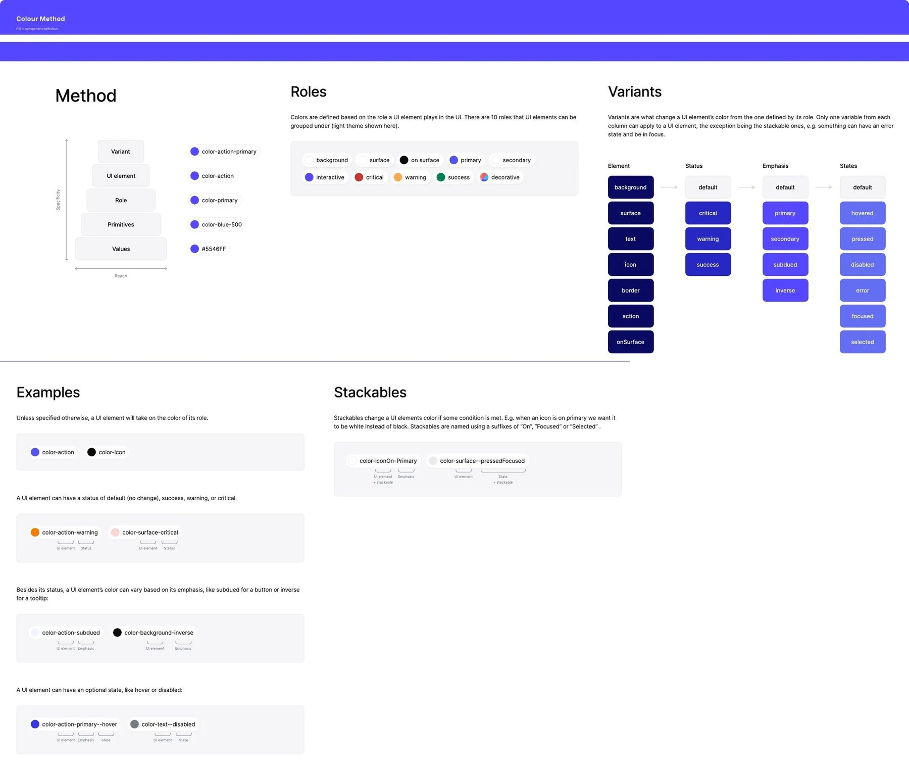
Read the detail
Fourteen semantic sets cover every surface, border, text, icon, action, input and status in Vantus HQ. Swap a mapping and every component that uses the name follows.
A colour changes only through a variant: a status, an emphasis or a state. Worked examples on the same page covered the cases people asked about most.
40+ components, every state drawn
Each component was built on the tokens, with every size, state and breakpoint drawn in Figma, annotated for developers and rebuilt in Storybook. Every page had the same layout: variants in a grid, states across the top, sizes down the side.
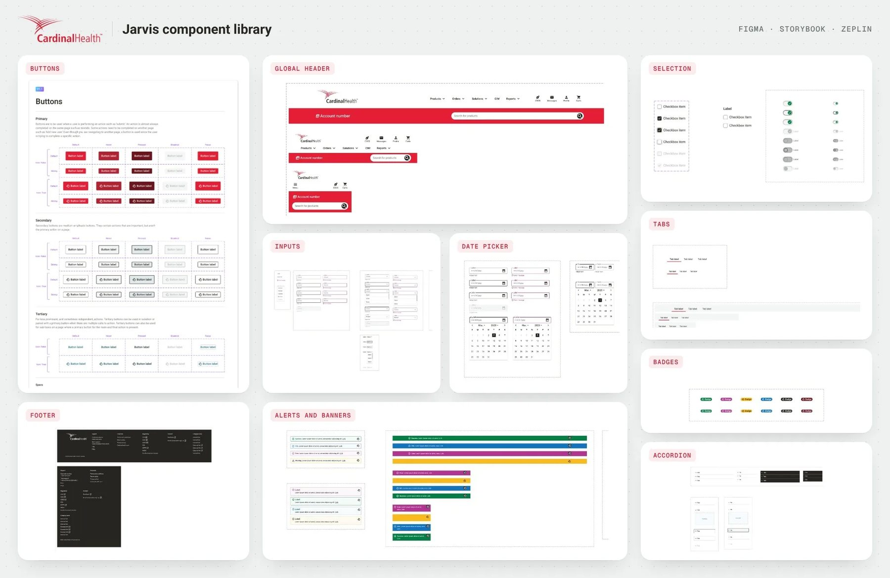
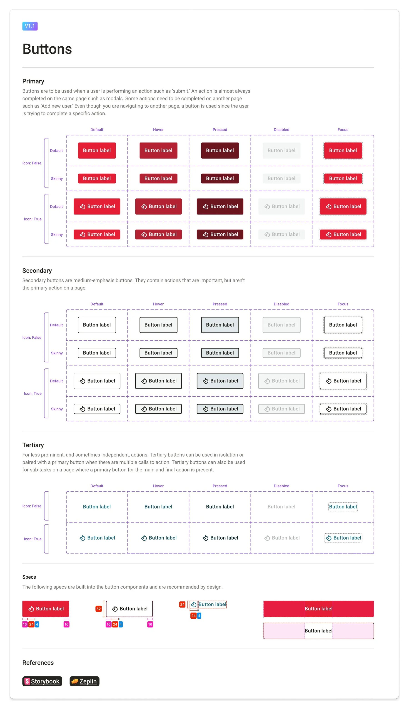
Buttons
Three types, five states and two sizes, with and without icons.
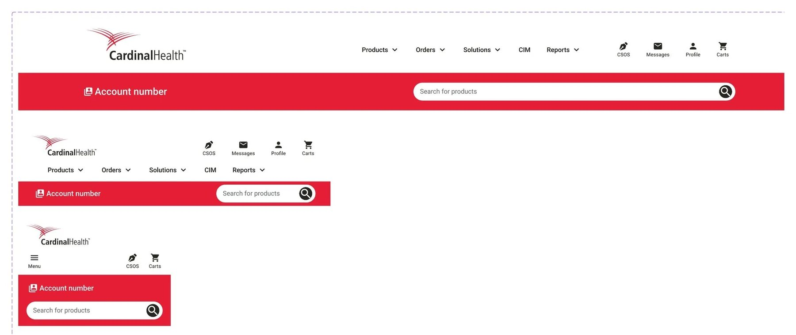
Global header
Logo, navigation, account bar and search, at desktop, tablet and mobile.

Inputs
Text, dropdown, quantity stepper, text area and phone number, each with helper and error text in every state.
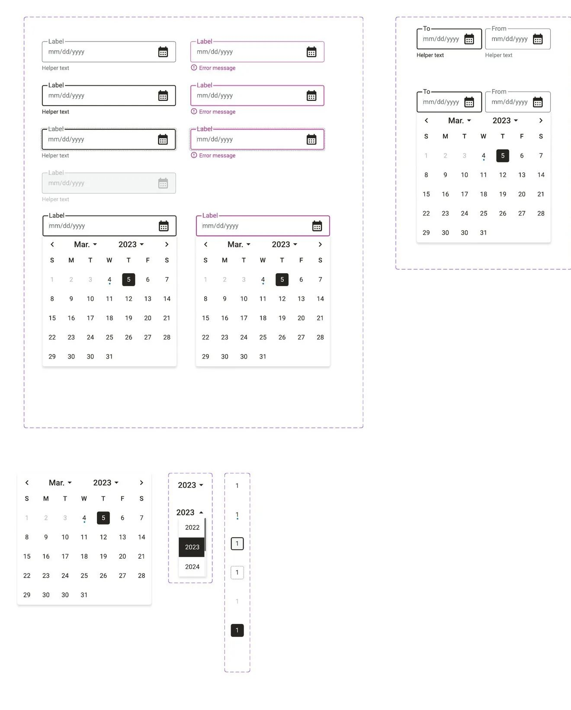
Date picker and upload
Calendars, ranges, and file upload with drag and drop.
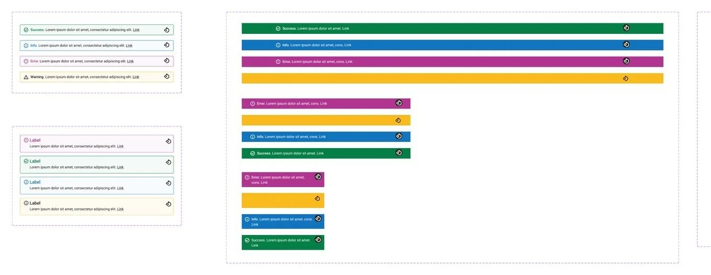
Alerts and banners
Inline alerts, full-width banners and toasts for success, info, error and warning.
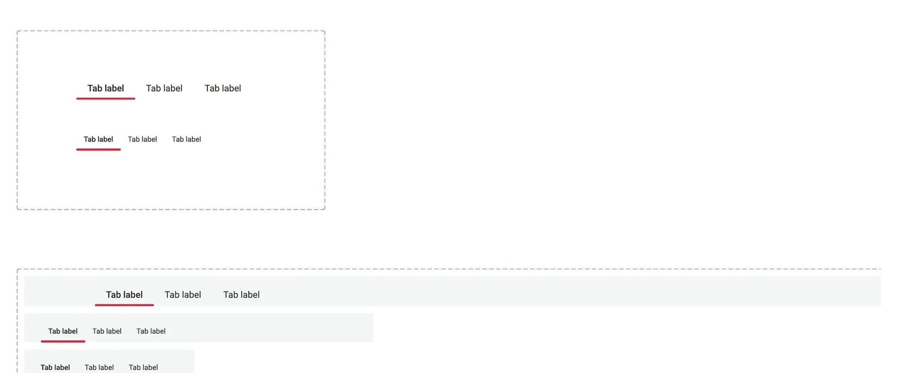
Tabs
Two sizes, on white and on grey, with the active red underline.
What squads built with it
Different squads owned home, catalogue, orders and insights. Because they all built from Jarvis, Vantus HQ reads as one product.
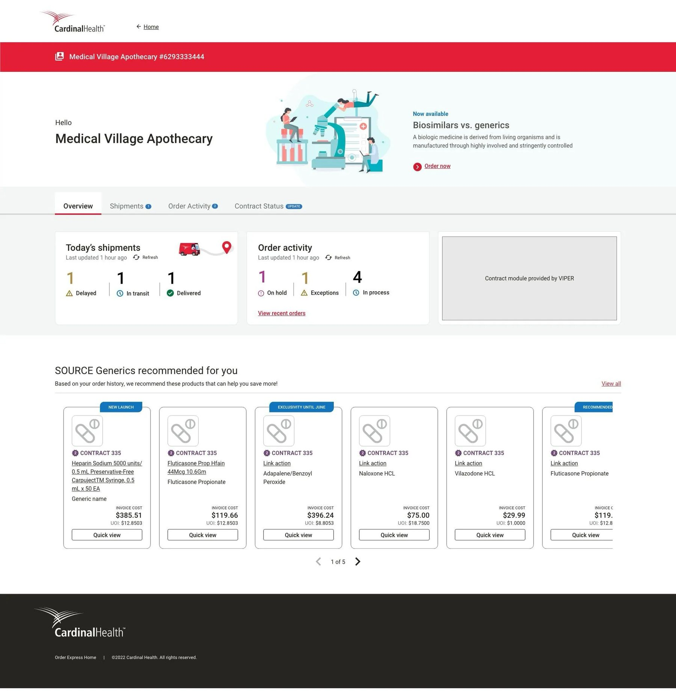
Home
A personalised pharmacy home: account bar, search, promotions and quick actions, all from Jarvis.
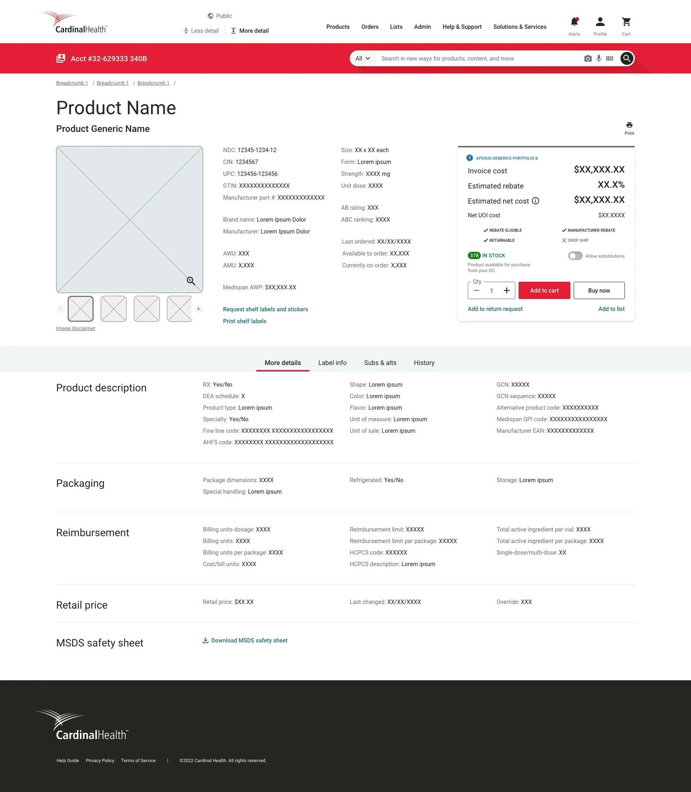
Product page
Product cards, contract badges, quantity steppers and the add-to-cart button.
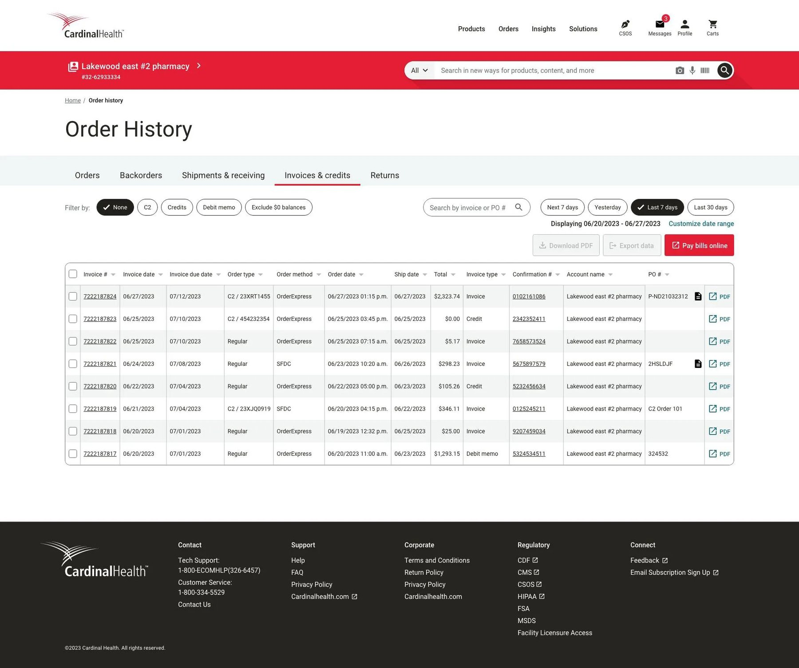
Orders
Tables, filters, status badges and pagination for daily ordering.
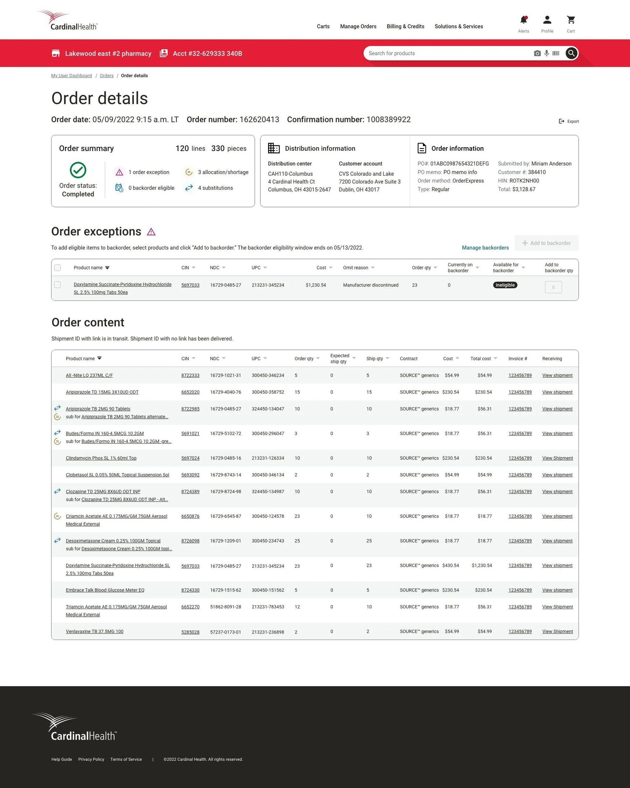
Order details
Tabs, shipment status and alerts for a single order.
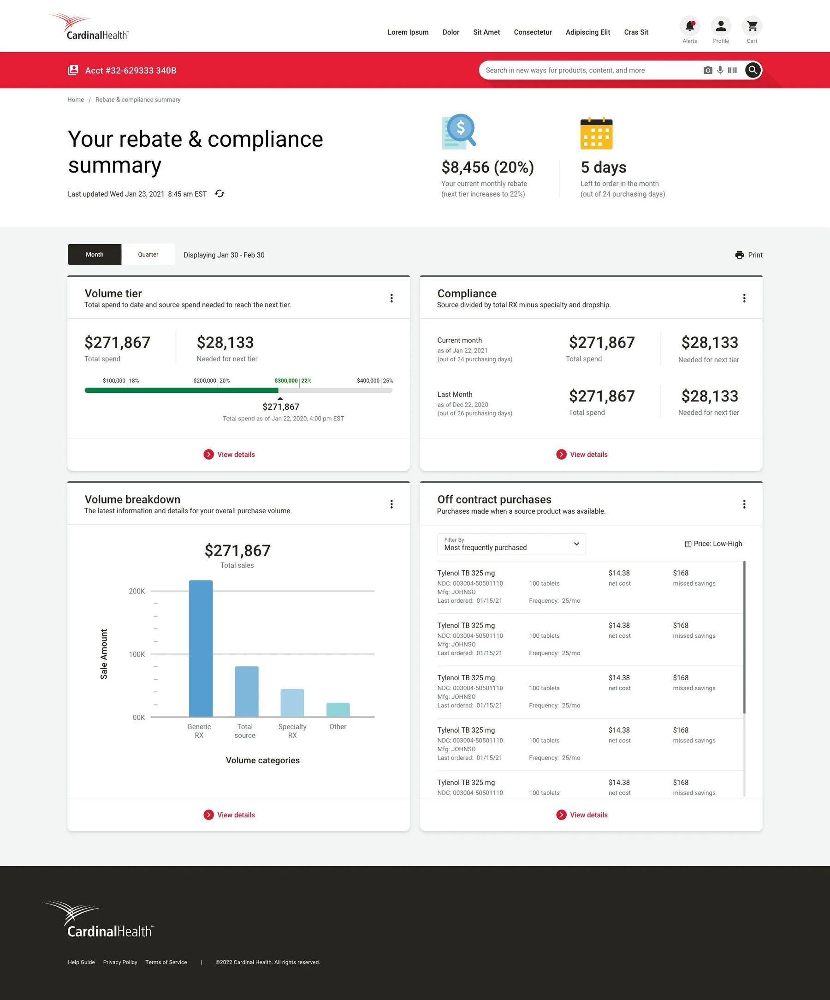
Rebates
Insights for a pharmacy's contracts, from the same tokens and components.
Screens use sample data and are shown for portfolio purposes only.
When the system became the bottleneck
As squads adopted Jarvis, every new screen turned into requests: a new variant, a fix, a question. The design system went from a side project to a product team.
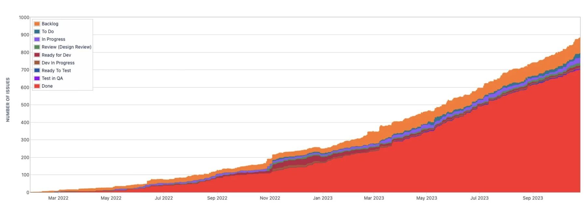
Process refinement
A defined workflow for design, development and QA, with a definition of done for every step.
Governance
Clear rules for what goes into Jarvis, who decides, and how squads contribute.
Planning with squads
Backlog refinement every sprint, so work landed in the order squads needed it.
Docs and training
A design system site in Confluence, one place for questions, playbacks and reviews.

Keeping Figma and Storybook in step
Every component went through the same seven steps, and the owner checked each one himself before it went out. Step through them.
Step 1 of 7
Request
A Jira ticket with the squad's need: what it's for and which screens it touches.
- Who
- Any squad
- When
- Any time
- What comes out
- A ticket in the design system backlog
Step 2 of 7
Audit
Who uses it today, which screens and squads a change would reach, and what could break.
- Who
- Design system owner
- When
- Before design
- What comes out
- A scope and a risk list
Step 3 of 7
Design
Every state and breakpoint, on tokens, annotated for developers.
- Who
- Design system team
- When
- In the sprint
- What comes out
- A component page in Figma
Step 4 of 7
Review
Design and copy review first, then a technical review with the developers who'll build it.
- Who
- Design, copy, then engineering
- When
- Mid-sprint
- What comes out
- An approved design
Step 5 of 7
Build
Built in Storybook from the annotations.
- Who
- Engineering
- When
- Next sprint
- What comes out
- A component in code
Step 6 of 7
QA
QA tests the build, then the owner checks it against the Figma page.
- Who
- QA, then the design system owner
- When
- Before release
- What comes out
- A build that matches the design
Step 7 of 7
Release
A new Storybook version and a changelog, so dev and QA can match a build to its handoff date.
- Who
- Design system team
- When
- Every release
- What comes out
- A versioned release and a changelog
Read the detail
Months in, structural changes in Storybook turned out not to reach production, so QA kept flagging work. With engineering, a new version was added for every structural change.
A changelog just for developers recorded every update, and was later automated. When XD libraries were frozen, Jarvis was rebuilt in Figma with variables for colour.
What we'd take to the next system
A system is a product, and it isn't done until the build matches the design.
A system is a product
It needs planning, a backlog and a roadmap, not just a library.
Check that design reaches production
A component is done when the build matches it, not when it's approved in Figma.
Quality over speed
Rushed fixes for urgent requests became debt. A little longer meant less maintenance later.
Share the ownership
People adopt what they help shape. Docs and training answer the same question a hundred times.
From the files
Select any image to see it full size.
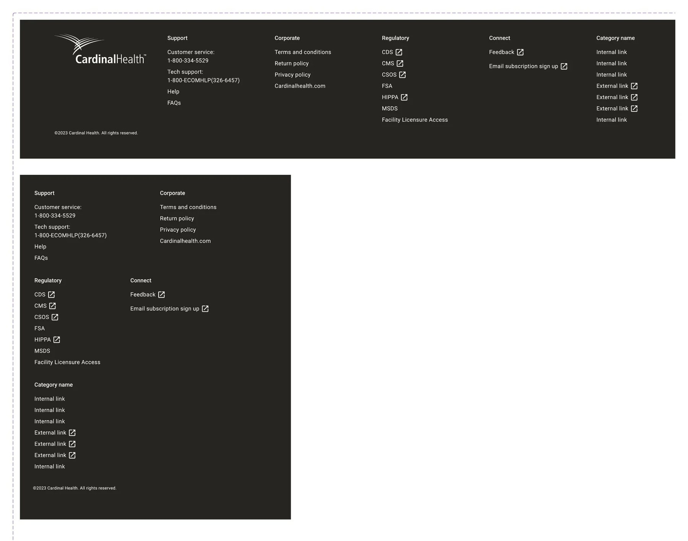
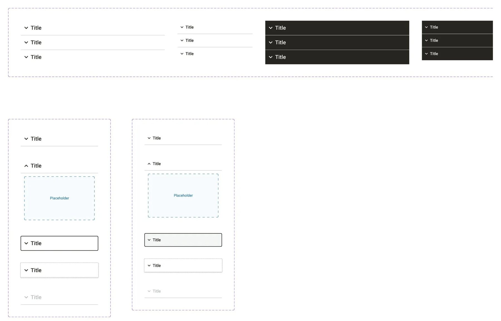


Led by Aniket Pandey as design system owner at IBM, with two IBM India designers, the IBM Columbus studio, and Cardinal Health's product, engineering and QA teams. This is IBM client work done as an employee, not Layer One client work. Images belong to Cardinal Health and IBM and are shown for portfolio purposes.
Need this for your product?
We do this work for product teams now. Start with a two-week audit.